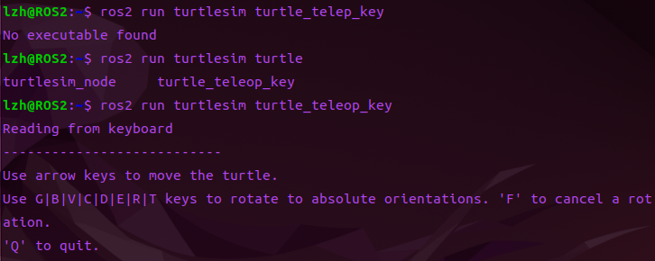
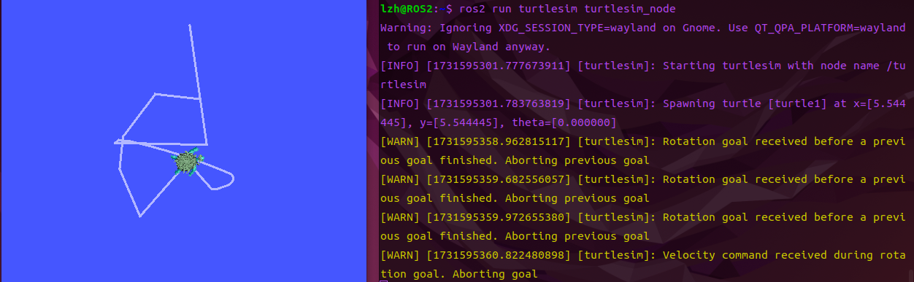

第二章 ROS2系统环境安装¶
ROS2安装相对比较复杂，且容易出错，所以建议使用手动安装走一遍流程，后续可以使用鱼香ROS的一键安装命令。
2.1 准备Ubuntu环境¶
Ubuntu安装¶
安装虚拟机（VMware）保姆级教程（附安装包）_vmware虚拟机-CSDN博客
2.2 手动安装(不推荐)¶
了解知道有这种方法即可，2.3的一键安装更便捷
1. 打开终端¶
2. 添加源¶
Bash
echo "deb [arch=$(dpkg --print-architecture)] https://repo.huaweicloud.com/ros2/ubuntu/ $(lsb_release -cs) main" | sudo tee /etc/apt/sources.list.d/ros2.list > /dev/null
3. 添加源对应的秘钥¶
Bash
sudo apt install curl gnupg2 -y
curl -s https://gitee.com/ohhuo/rosdistro/raw/master/ros.asc | sudo apt-key add -
4. 更新¶
5. 安装ROS2¶
6. 安装额外依赖¶
7. 配置环境变量¶
防止每次都需要进行source，把ros2加入bashrc中。就是每次启动终端都让它自动的输入这句话。
2.3 一键安装(推荐)¶
最后介绍最简单快捷不容易出错的一键安装。
输入密码，在选项界面选择1-一键安装ROS，接着根据你的情况选择是否更换系统源（基础篇更换了就不用了），接着就会让你选择要安装的ROS2版本了。这里选择humble版本的ROS2即可。
最后会问你安装桌面版还是基础版，我们选择桌面版，包含可视化工具，如果是在树莓派上装可以使用基础版。
更多的一键安装详情在鱼香ROS网址：
小鱼的一键安装系列 | 鱼香ROS (fishros.org.cn)
2.4 ROS2初体验¶
1.启动海龟模拟器¶
打开一个终端

2.启动海龟键盘控制¶
打开一个新的终端

可以看到我有一次是输错命令，自己敲命令合理使用
Tab键可以便捷敲出命令。